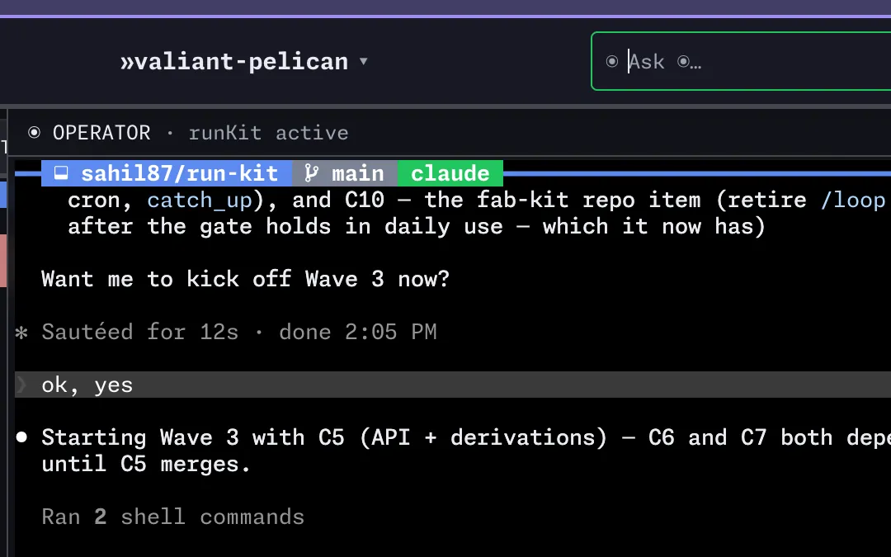

Your tmux, in the browser and on your phone.
HexoKit already shows every pane as a live terminal. Now the agent gets a desktop of its own, in a tile beside your terminals, and you watch it from the couch.
MIT. Seven repos. Zero databases.
Set up in one line
- tmux 3.4 or newer is the only prerequisite
- Homebrew tap trust handled for you
rk doctorchecks everything else
curl -fsSL hexokit.com/install | sh
Give the agent a screen
rk gui on starts a desktop on the host and puts it in a tile beside your terminals. The agent opens apps, clicks, types and takes screenshots. You watch from the browser or your phone. Off by default, and yours to switch off.
One agent watches the others
rk operator opens a coordinator you talk to. It starts the next change, unblocks a stuck one, and pings your phone.

The agent plans before it builds
fab-kit scores every assumption. Under 3.0 the gate closes and the pipeline tells you what to clarify.
$ fab score --check-gate 7ajq confidence 2.6 / 5.0 · gate 3.0 · blocked 1 unresolved · run /fab-clarify $ fab score --check-gate 7ajq confidence 3.4 / 5.0 · gate 3.0 · pass
Three agents and the dev server, side by side
Pin panes from any machine into a board. One dot per window says working, waiting or idle.

Steer it from your phone
Serve it over Tailscale. Same panes, a key bar for tab, ctrl and arrows. Push arrives with the tab closed.
$ tailscale serve --bg \ http://localhost:3000

HexoKit is the base. Each tool adds one thing.
Six small CLIs. Drop any one and the rest keep working.
/fab-newwt createidea addtu --watchhop --all pullshll setup agentrk desktop installrk --help